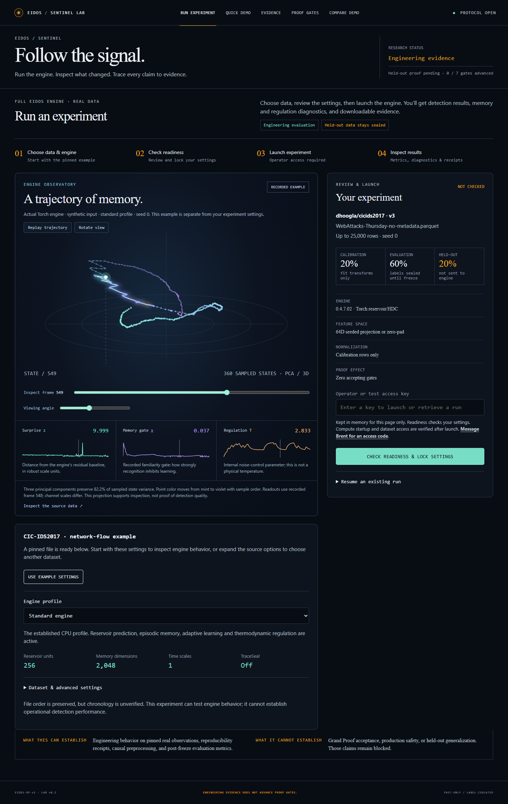
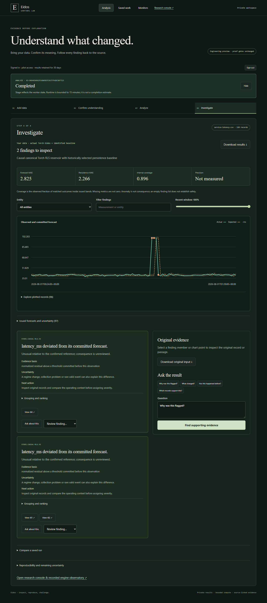

From research console to private source analysis
Actual browser captures. The guided workflow is implemented; hosted completion is partial because new Sandbox workers return HTTP 402. Operational alert qualification failed.
Production before this candidate

The recorded engine view and Kaggle workflow are preserved at /research.Verified guided result

Actual hosted Torch run at da14cc7. Both Eidos and persistence error are visible; this fixture favors persistence.Measured comparisons · Evidence progress and limits · Acceptance table